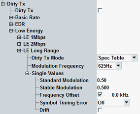

Configures in the R&S CMW transmitting of a non-ideal signal also known as dirty transmitter. Dirty transmitter is defined in the test specification for Bluetooth wireless technology.
- TP/RCV/CA/BV-01-C
- TP/RCV/CA/BV-02-C
- TP/RCV/CA/BV-07-C
- TP/RCV-LE/CA/BV-01-C (for LE 1M PHY)
- TP/RCV-LE/CA/BV-08-C (for LE 2M PHY)
- TP/RCV-LE/CA/BV-26-C (for LE coded PHY, S = 2)
- TP/RCV-LE/CA/BV-27-C (for LE coded PHY, S = 8)
- TP/RCV-LE/CA/BV-14-C (for LE 1M PHY, stable modulation)
- TP/RCV-LE/CA/BV-20-C (for LE 2M PHY, stable modulation)
- TP/RCV-LE/CA/BV-32-C (for LE coded PHY, S = 2, stable modulation)
- TP/RCV-LE/CA/BV-33-C (for LE coded PHY, S = 8, stable modulation)

Typically, remote commands ...:BRATe are used for BR physical layer (PHY), ...:EDRate for EDR PHY, ...:LE1M for LE 1M PHY, ...:LE2M for LE 2M PHY, and ...:LRANge for LE coded PHY.
Enables/disables dirty transmitter.
Remote command:Selects one of the following schemes to configure the dirty transmitter:
- "Single Values": manual settings of dirty transmitter parameters to be applied without periodic change, see "Single Values".
- "Spec Table": dirty transmitter settings according to the test specification for Bluetooth wireless technology, refer to "Settings for Spec Table Mode".
Option R&S CMW-KS610 is required for BR/EDR.
Option R&S CMW-KS611 is required for LE 1M PHY. Option R&S CMW-KS721 is also required for LE 2M PHY and LE coded PHY.
The following commands query dirty transmitter settings according to the test specification for Bluetooth wireless technology (see the following tables). The values are fixed. The frequency drift is always on. For BR/EDR, the drift rate is time-dependent. For LE, the drift rate is configurable.
Set | Frequency offset in kHz | Modulation index | Symbol timing error in ppm |
|---|---|---|---|
1 | 75 | 0.28 | -20 |
2 | 14 | 0.30 | -20 |
3 | -2 | 0.29 | 20 |
4 | 1 | 0.32 | 20 |
5 | 39 | 0.33 | 20 |
6 | 0 | 0.34 | -20 |
7 | -42 | 0.29 | -20 |
8 | 74 | 0.31 | -20 |
9 | -19 | 0.28 | -20 |
10 | -75 | 0.35 | 20 |
If the BR dirty transmitter is enabled, the R&S CMW transmits the first 20 ms using the first parameter set. The second 20 ms are transmitted with parameter set two, and so forth. After the tenth set of parameters has been used, the R&S CMW continues using the first set again.
Set | Frequency offset in kHz | Symbol timing error in ppm |
|---|---|---|
1 | 0 | 0 |
2 | 65 | 20 |
3 | -65 | -20 |
If the EDR dirty transmitter is enabled, the R&S CMW transmits the first 20 packets using the first parameter set. The second 20 packets are transmitted with parameter set two, and so forth. After the third set of parameters has been used, the R&S CMW continues using the first set again.
Set | Frequency offset in kHz | Standard modulation index | Stable modulation index | Symbol timing error in ppm |
|---|---|---|---|---|
1 | 100 | 0.45 | 0.495 | -50 |
2 | 19 | 0.48 | 0.498 | -50 |
3 | -3 | 0.46 | 0.496 | 50 |
4 | 1 | 0.52 | 0.502 | 50 |
5 | 52 | 0.53 | 0.503 | 50 |
6 | 0 | 0.54 | 0.504 | -50 |
7 | -56 | 0.47 | 0.497 | -50 |
8 | 97 | 0.50 | 0.500 | -50 |
9 | -25 | 0.45 | 0.495 | -50 |
10 | -100 | 0.55 | 0.505 | 50 |
If the LE dirty transmitter is enabled, the R&S CMW transmits the first 50 packets using the first parameter set. The next 50 packets are transmitted using the second parameter set so forth. After the tenth set of parameters has been used, the R&S CMW continues using the first set again.
Remote command:BR:
EDR:
LE:
Specifies, which one of the two possible modulation index modes are used for dirty transmitter signal: standard or stable.
- Deactivate "Stable Modulation Index (LE)" to use standard modulation settings
The range of standard modulation index is 0.450 to 0.550. - Activate "Stable Modulation Index (LE)" to use stable modulation settings
The range of stable modulation index is 0.495 to 0.505.
In the GUI, the commands for "Dirty Tx Mode" = "Single Values" are configurable. Remote commands distinguish between settings for "Dirty Tx Mode" = "Single Values" and "Spec Table".
For the modulation index for "Dirty Tx Mode" = "Spec Table", refer to "Settings for Spec Table Mode" .
For the modulation index for "Dirty Tx Mode" = "Single Values", refer to "Single Values".
Remote command:Specifies the drift rate for LE dirty transmitter. The setting is applied in the following cases:
- "Dirty Tx Mode" = "Single Values" and the drift is enabled
- "Dirty Tx Mode" = "Spec Table"
The parameters take effect if dirty TX is set to "Single Values". Exception is the additional configuration of modulation frequency for LE, that applies also in "Dirty Tx Mode" = "Spec Table".
"Single Values" specify single set of dirty transmitter parameters to be applied without periodic change.
- "Modulation Index": Enable / disable modulation index and configure its value. Two possible modulation indexes are configurable for LE: standard or stable modulation.
The checkbox for enabling/disabling modulation index in the GUI is visible in the LE RX measurements, hotkey "Dirty Tx" > "Modulation Index". - "Frequency Offset": Enable / disable frequency offset and configure its value.
- "Symbol Timing Error": Disable or enable symbol timing error and configure its value.
- "Drift": Enable / disable the drift. For BR/EDR, the time-dependent drift is generated according to the test specification for Bluetooth wireless technology. For LE, the value is configurable via "Modulation Frequency".
Option R&S CMW-KS610 is required for BR/EDR.
Option R&S CMW-KS611 is required for LE 1M PHY. Option R&S CMW-KS721 is also required for LE 2M PHY and LE coded PHY.
BR:
EDR:
LE standard modulation:
LE stable modulation:
LE frequency offset:
LE symbol timing error:
LE drift: